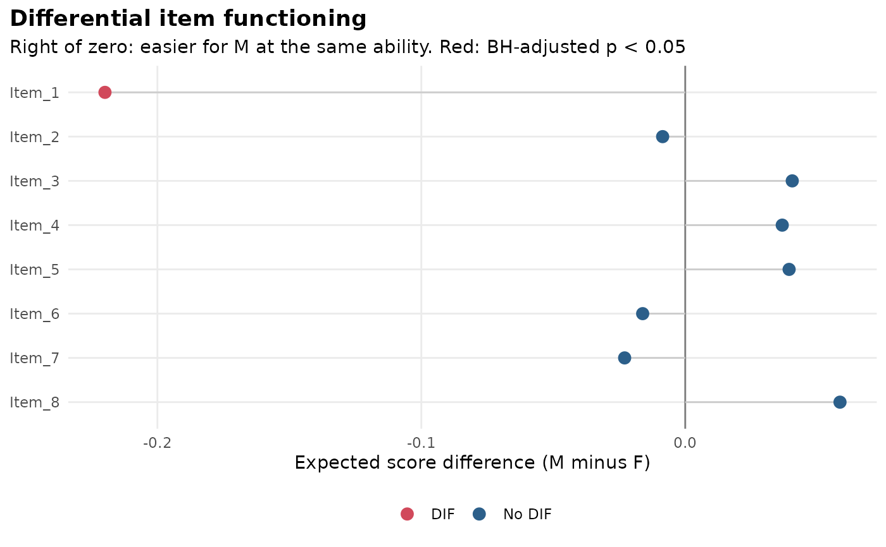

Tests every item for DIF between groups (for example by gender or language)
and reports the results as a tidy table with effect sizes. The analysis uses
the constrained-baseline approach: a multiple-group model is fitted with all
item parameters equal across groups and free latent means and variances,
then each item's parameters are freed in turn and compared with a
likelihood-ratio test (mirt::DIF() with scheme = "drop").
Usage
dif(
x,
group = NULL,
model = "2PL",
items = NULL,
which.par = NULL,
p_adjust = "BH",
alpha = 0.05,
verbose = FALSE,
...
)Arguments
- x
a data frame or matrix of item responses, or a
mirt::multipleGroup()model whose item parameters are constrained to be equal across groups (the baseline model).- group
the grouping variable: a vector with one value per respondent, or the name of a column of
x(that column is then not treated as an item). Ignored whenxis a model.- model
item type passed to
mirt::multipleGroup(), e.g."Rasch","2PL","3PL","graded"or"gpcm". Ignored whenxis a model.- items
items to test, by name or position. Defaults to all items; untested items act as anchors.
- which.par
parameters to test. Defaults to all estimated item parameters (for example
a1anddfor the 2PL).- p_adjust
p-value adjustment across items (see
stats::p.adjust()).- alpha
significance level for flagging an item, applied to the adjusted p-values.
- verbose
logical; show progress.
- ...
further arguments passed to
mirt::multipleGroup().
Value
An object of class mv_dif with elements table (one row per
tested item: item, X2, df, p.value, p.adjusted, flag, esd,
uesd, converged), baseline (the constrained model), models (the
models with each item freed), groups, reference, focal,
which.par, alpha and p_adjust. Use tidy(), gg_dif() and
interpret() on it.
Details
Effect sizes are reported for two-group comparisons as the difference in
expected item score between the focal and the reference group at the same
ability, averaged over the focal group's ability distribution: esd is the
signed difference (positive values mean the item is easier for, or favours,
the focal group) and uesd the unsigned difference, which also captures
crossing (non-uniform) DIF. Both are on the item score scale, so for 0/1
items they are differences in the probability of a correct answer.
Examples
# \donttest{
set.seed(1)
a <- matrix(rlnorm(8, 0.2, 0.3)); d <- matrix(rnorm(8))
d2 <- d; d2[1] <- d2[1] - 1
data <- rbind(simdata(a, d, 400, itemtype = "2PL"),
simdata(a, d2, 400, itemtype = "2PL"))
gender <- rep(c("F", "M"), each = 400)
res <- dif(data, group = gender)
res
#> DIF analysis: F (reference) vs M; 8 items tested
#> Likelihood-ratio tests freeing a1, d; BH-adjusted p < 0.05 flags DIF
#>
#> item X2 df p.value p.adjusted flag esd uesd converged
#> Item_1 47.375 2 < .001 < .001 DIF -0.220 0.220 TRUE
#> Item_2 2.735 2 .255 .529 -0.009 0.059 TRUE
#> Item_3 1.804 2 .406 .529 0.041 0.041 TRUE
#> Item_4 2.441 2 .295 .529 0.037 0.044 TRUE
#> Item_5 1.885 2 .390 .529 0.039 0.040 TRUE
#> Item_6 0.452 2 .798 .798 -0.016 0.016 TRUE
#> Item_7 1.542 2 .463 .529 -0.023 0.043 TRUE
#> Item_8 3.739 2 .154 .529 0.059 0.059 TRUE
gg_dif(res)

interpret(res)
#> DIF overview
#> ------------
#> * Items were tested for DIF between F and M, with F as the reference group (n
#> = 400 F, n = 400 M).
#> * Each item's parameters (a1, d) were freed in turn and compared with a model
#> holding them equal across groups (likelihood-ratio test, BH-adjusted p <
#> 0.05).
#> * On the common scale, the M group's mean ability is 0.09 SD below the F
#> group's, and its SD is 1.23.
#>
#> DIF items
#> ---------
#> * 1 of 8 items show DIF: Item_1 (expected score difference -0.220, favours F;
#> p < .001).
#> * Statistical DIF is not proof of bias: ask content experts whether these
#> items measure something other than the intended ability for one group
#> before removing or revising them.
#>
# }